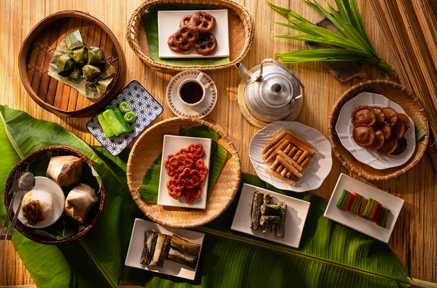
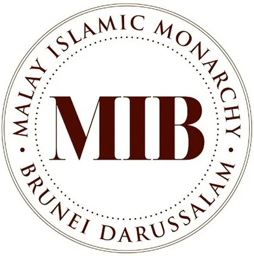
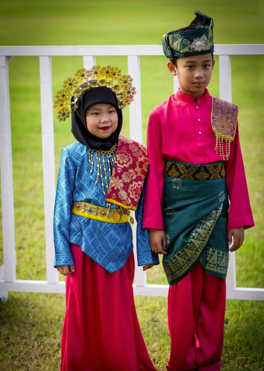
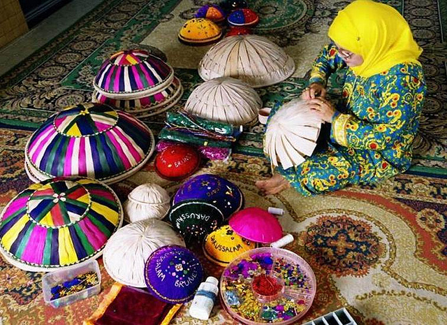
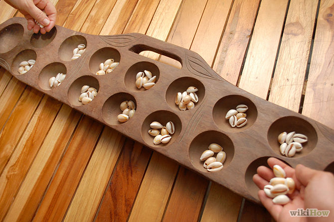
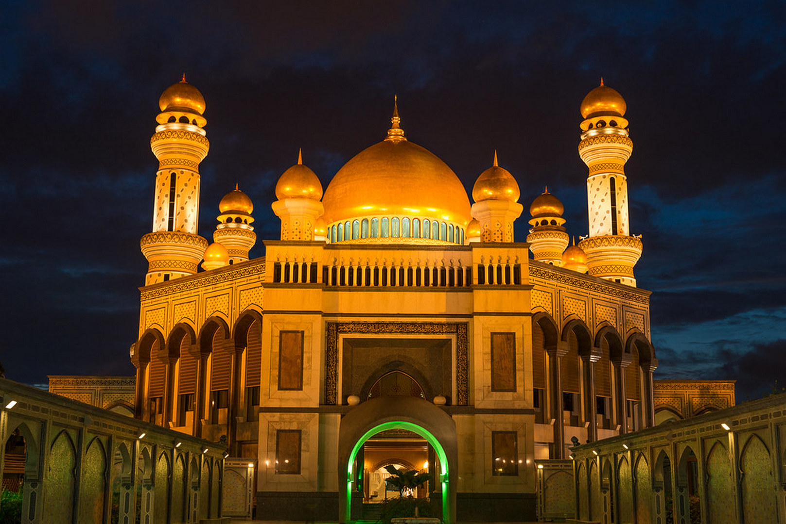
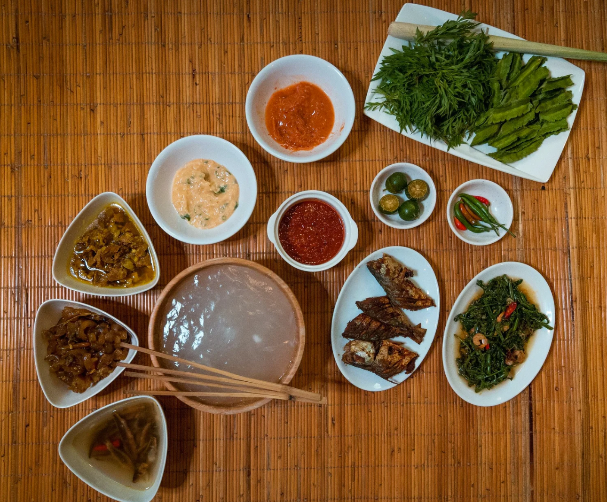
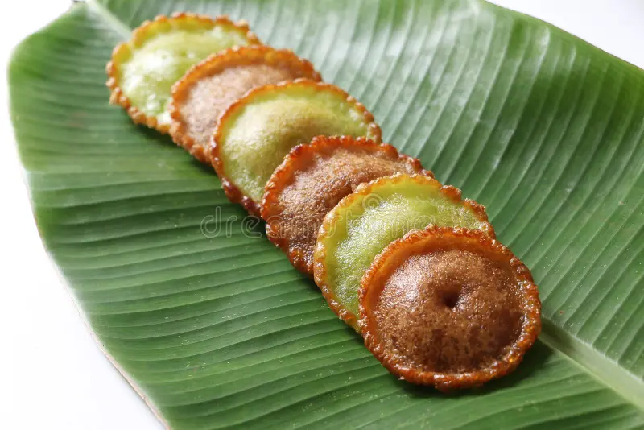
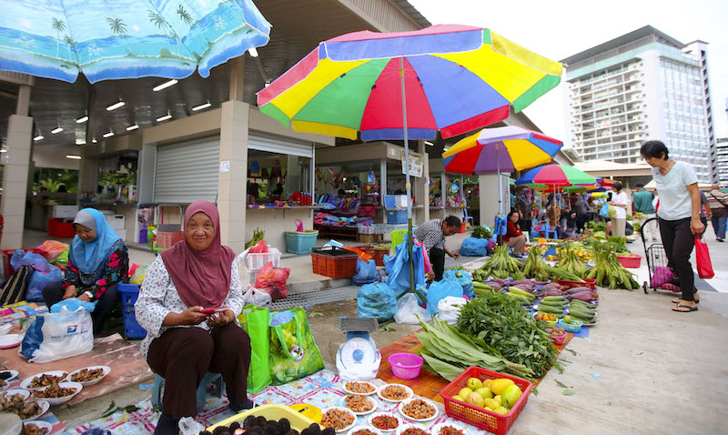

Culture & Heritage
The Beauty of Bruneian Culture
Bruneian culture is a harmonious blend of deep-rooted Islamic traditions, Malay heritage, and indigenous Bornean influences, all framed by a peaceful and unhurried lifestyle.
Beyond the landmarks, Brunei invites you to experience its living culture - greet locals with warm smiles, taste ambuyat at a bustling food market, or join in colorful festivals that celebrate unity, faith, and heritage. Here, every moment echoes the rhythm of a nation that gracefully balances reverence for the past with pride in the present.
Discover the Traditions of Brunei
The country's traditional arts and crafts reflect a fusion of Islamic and Asian culture.
Brunei's artwork can be glimpsed in its mosques, which feature colourful collections of paintings and intricate mosaics.
The country's customs skew conservative. People dress conservatively, and women keep their legs and most of their arms covered in public. Bruneians greet each other by lightly touching the hands and then bringing the hand to the chest.

Malay Islamic Monarchy (MIB)
- The role of the Malay Islam Monarchy philosophy is to serve as the foundation of preservation of identity, unity and sovereignty.
- MIB plays a central role in shaping identity formation in Brunei by grounding national belonging in Malay cultural heritage intertwined with Islamic values and monarchical loyalty
- MIB was incorporated into Brunei's education system after the country gained independence in 1984.
Traditional Clothing, Crafts and Customs

Traditional Clothing
For men in Brunei, they wear traditional garments like the Baju Cara Melayu and Sinjang, which reflect both the country’s rich cultural heritage and Islamic values. These outfits are elegant, modest, and perfect for formal occasions, religious ceremonies, and weddings. The Baju Cara Melayu consists of a long-sleeved shirt paired with matching trousers. Its simple yet dignified design is crafted to align with Islamic teachings on modest dressing.
For women, traditional clothing in Brunei includes the Baju Kurung, a long tunic with a matching skirt, as well as the headscarf or tudung. The Baju Kurung is a long tunic worn with a matching long skirt. Designed for both modesty and comfort, this outfit ensures that women maintain a dignified and graceful appearance while adhering to Islamic guidelines.

Traditional Handicrafts
Traditional handicrafts in Brunei represent a rich cultural legacy preserved and showcased through key institutions like the Brunei Arts and Handicraft Training Centre.
One of the major traditional handicrafts is Kain Tenunan (Handwoven Brocade Textiles): Brunei's most iconic craft involves hand-looming silk or cotton interlaced with shimmering gold and silver threads. The signature Jongsarat design, along with patterns like Kain Bertabur and Kain Silubang Bangsi, has roots dating back to the 15th-century Brunei Empire and is traditionally worn for royal and wedding ceremonies.
Another one is Anyaman (Basketry & Plaiting): Traditionally practiced by housewives using split bamboo, rattan, and plant leaves, basket-weaving and plaiting originated in areas like Sengkurong, Tanjung Nangka, and Kampong Ayer. Classic items include takiding (carry baskets), tudung dulang (food dish covers), nyiru (winnowing trays), purses, and decorative miniatures.

Traditional Games
Traditional games in Brunei are an important part of the nation's cultural heritage, fostering social bonds, strategic thinking, and physical skills. There are two types, board or strategy games and active or outdoor games.
Examples of board games are Pasang, a classic Malay-Brunei board game played on a special board using 120 tokens (black and white). Two players capture pieces following complex patterns that often resemble traditional songket or tenun textile embroideries. It is traditionally played during royal celebrations and festivals. Also, congkak, a widely known Southeast Asian board game played on a wooden board with two rows of holes. Players take turns distributing seeds or marbles into the holes to capture the most pieces.
Examples of outdoor games are Kaki Tiga (Slipper Pyramid), a team game where players build a small pyramid using three slippers and take turns defending or knocking it down. Other than that is gasing, a traditional wooden spinning tops that can be spun individually or launched using a string (gasing tarik)
Islamic Etiquettes & Manner
- Do dress modestly in public, shoulders and knees covered is a safe rule
- Do remove shoes when entering homes and mosques
- Don’t drink alcohol in public; sales are banned and private import is strictly limited

Traditional Bruneian Food

Ambuyat
Brunei's national dish, made from the starchy interior trunk of the sago palm tree. It is a sticky, translucent, and nearly flavorless glue-like paste. You eat it by rolling or twisting it around a split bamboo fork called a chandas and dipping it into a sour, spicy gravy or fruit sauce called cacah before swallowing it whole without chewing.

Nasi Katok
Brunei's most famous and beloved everyday comfort food. It is a simple, budget-friendly meal consisting of warm, fragrant white rice, a piece of crispy fried chicken, and a dollop of spicy sambal or sweet-savory chili sauce, traditionally wrapped in brown paper or a banana leaf.

Traditional Kuih
Traditional Brunei kuih refers to a rich variety of bite-sized sweet or savoury Malay and Kedayan snacks, cakes, and pastries. They are typically made from foundational local ingredients like rice flour, glutinous rice, coconut milk, pandan, and palm sugar (gula anau or gula melaka).
Local Markets and Tamu in Brunei

Traditional Markets & Tamu
Markets and tamu are a local haven for affordable local dishes and produce.
Traditional food, edible ferns, bamboo shoots, snacks, poultry, antiques, ornaments, meat and pets are readily available at the market.
Fresh fruits and vegetables are available at much cheaper prices than the supermarkets.
Experience the Heritage of Brunei
From rich traditions and vibrant wildlife to thrilling adventures, explore the diverse experiences that make Brunei a unique and captivating destination.